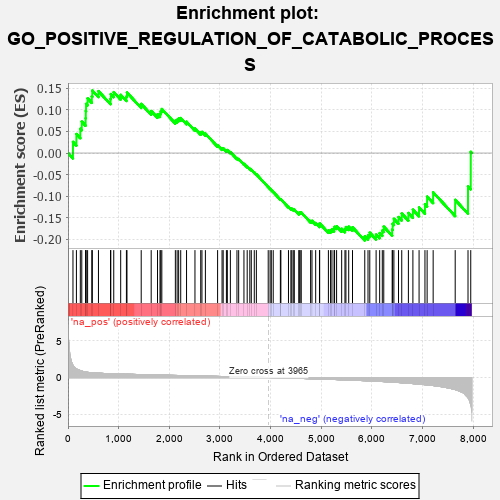
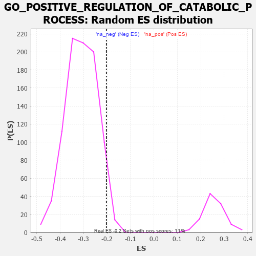

| | | Dataset | 7d |
| Phenotype | NoPhenotypeAvailable |
| Upregulated in class | na_neg |
| GeneSet | GO_POSITIVE_REGULATION_OF_CATABOLIC_PROCESS |
| Enrichment Score (ES) | -0.20276166 |
| Normalized Enrichment Score (NES) | -0.6574564 |
| Nominal p-value | 0.95865923 |
| FDR q-value | 1.0 |
| FWER p-Value | 1.0 |
Table: GSEA Results Summary

Fig 1: Enrichment plot: GO_POSITIVE_REGULATION_OF_CATABOLIC_PROCESS
Profile of the Running ES Score & Positions of GeneSet Members on the Rank Ordered List
| PROBE | GENE SYMBOL | GENE_TITLE | RANK IN GENE LIST | RANK METRIC SCORE | RUNNING ES | CORE ENRICHMENT | | 1 | IRS1 | | | 98 | 1.659 | 0.0258 | No |
| 2 | AXIN1 | | | 166 | 1.159 | 0.0440 | No |
| 3 | NSF | | | 243 | 0.947 | 0.0562 | No |
| 4 | ULK1 | | | 272 | 0.875 | 0.0728 | No |
| 5 | CNOT7 | | | 348 | 0.750 | 0.0806 | No |
| 6 | GSK3A | | | 351 | 0.745 | 0.0975 | No |
| 7 | ARNT | | | 357 | 0.741 | 0.1140 | No |
| 8 | BAX | | | 387 | 0.711 | 0.1267 | No |
| 9 | LRP1 | | | 470 | 0.648 | 0.1312 | No |
| 10 | CDC20 | | | 480 | 0.644 | 0.1449 | No |
| 11 | FBXW8 | | | 601 | 0.594 | 0.1434 | No |
| 12 | TFEB | | | 839 | 0.522 | 0.1253 | No |
| 13 | NRDC | | | 845 | 0.521 | 0.1366 | No |
| 14 | TMTC3 | | | 903 | 0.506 | 0.1411 | No |
| 15 | AKT1 | | | 1040 | 0.476 | 0.1348 | No |
| 16 | SCOC | | | 1153 | 0.453 | 0.1310 | No |
| 17 | GRSF1 | | | 1164 | 0.452 | 0.1401 | No |
| 18 | RBX1 | | | 1445 | 0.401 | 0.1138 | No |
| 19 | DDB1 | | | 1642 | 0.366 | 0.0974 | No |
| 20 | AGO2 | | | 1767 | 0.343 | 0.0895 | No |
| 21 | FMR1 | | | 1816 | 0.334 | 0.0912 | No |
| 22 | UVRAG | | | 1831 | 0.332 | 0.0970 | No |
| 23 | TRIM5 | | | 1852 | 0.327 | 0.1020 | No |
| 24 | SNF8 | | | 2119 | 0.288 | 0.0749 | No |
| 25 | DTL | | | 2154 | 0.284 | 0.0771 | No |
| 26 | NPRL2 | | | 2184 | 0.278 | 0.0799 | No |
| 27 | MYLIP | | | 2225 | 0.272 | 0.0810 | No |
| 28 | FAF1 | | | 2340 | 0.255 | 0.0724 | No |
| 29 | HUWE1 | | | 2506 | 0.225 | 0.0567 | No |
| 30 | BAG3 | | | 2620 | 0.209 | 0.0472 | No |
| 31 | KAT5 | | | 2644 | 0.206 | 0.0490 | No |
| 32 | PHB2 | | | 2712 | 0.197 | 0.0450 | No |
| 33 | SOCS4 | | | 2953 | 0.157 | 0.0182 | No |
| 34 | UFL1 | | | 3041 | 0.144 | 0.0104 | No |
| 35 | KEAP1 | | | 3063 | 0.141 | 0.0110 | No |
| 36 | WWP1 | | | 3127 | 0.133 | 0.0061 | No |
| 37 | EDEM2 | | | 3145 | 0.131 | 0.0069 | No |
| 38 | FZR1 | | | 3205 | 0.122 | 0.0023 | No |
| 39 | CHFR | | | 3335 | 0.099 | -0.0118 | No |
| 40 | SMAD7 | | | 3369 | 0.093 | -0.0139 | No |
| 41 | CNOT1 | | | 3473 | 0.081 | -0.0251 | No |
| 42 | ASB11 | | | 3537 | 0.070 | -0.0315 | No |
| 43 | MAPK3 | | | 3589 | 0.062 | -0.0365 | No |
| 44 | WAC | | | 3618 | 0.056 | -0.0388 | No |
| 45 | ABCD1 | | | 3677 | 0.047 | -0.0451 | No |
| 46 | HSF1 | | | 3718 | 0.039 | -0.0493 | No |
| 47 | GGA1 | | | 3952 | 0.002 | -0.0788 | No |
| 48 | VPS35 | | | 3989 | -0.006 | -0.0832 | No |
| 49 | RNF14 | | | 4013 | -0.010 | -0.0859 | No |
| 50 | ATG5 | | | 4051 | -0.016 | -0.0903 | No |
| 51 | SESN1 | | | 4192 | -0.041 | -0.1071 | No |
| 52 | VPS11 | | | 4202 | -0.041 | -0.1073 | No |
| 53 | ADRB2 | | | 4352 | -0.068 | -0.1247 | No |
| 54 | STX5 | | | 4400 | -0.077 | -0.1288 | No |
| 55 | PRR5L | | | 4418 | -0.080 | -0.1292 | No |
| 56 | CDC37 | | | 4446 | -0.084 | -0.1307 | No |
| 57 | LRRK2 | | | 4467 | -0.087 | -0.1312 | No |
| 58 | APC | | | 4558 | -0.107 | -0.1402 | No |
| 59 | BAG6 | | | 4563 | -0.108 | -0.1382 | No |
| 60 | VPS28 | | | 4582 | -0.114 | -0.1378 | No |
| 61 | NUB1 | | | 4604 | -0.119 | -0.1377 | No |
| 62 | PIM2 | | | 4789 | -0.155 | -0.1575 | No |
| 63 | FBXW7 | | | 4816 | -0.161 | -0.1571 | No |
| 64 | CLU | | | 4889 | -0.174 | -0.1622 | No |
| 65 | DXO | | | 4964 | -0.191 | -0.1672 | No |
| 66 | ATG4B | | | 4968 | -0.192 | -0.1632 | No |
| 67 | FLCN | | | 5140 | -0.235 | -0.1795 | No |
| 68 | HDAC6 | | | 5183 | -0.244 | -0.1792 | No |
| 69 | ATM | | | 5210 | -0.249 | -0.1767 | No |
| 70 | IDE | | | 5252 | -0.258 | -0.1760 | No |
| 71 | PTEN | | | 5262 | -0.261 | -0.1711 | No |
| 72 | RAB7A | | | 5302 | -0.271 | -0.1698 | No |
| 73 | SUMO2 | | | 5402 | -0.296 | -0.1756 | No |
| 74 | CPT1A | | | 5467 | -0.311 | -0.1766 | No |
| 75 | ACTN3 | | | 5486 | -0.315 | -0.1716 | No |
| 76 | EDEM1 | | | 5541 | -0.331 | -0.1708 | No |
| 77 | LARP1 | | | 5616 | -0.349 | -0.1722 | No |
| 78 | ATG7 | | | 5858 | -0.420 | -0.1931 | Yes |
| 79 | STK11 | | | 5922 | -0.443 | -0.1909 | Yes |
| 80 | SGSM3 | | | 5957 | -0.457 | -0.1846 | Yes |
| 81 | PLK1 | | | 6082 | -0.500 | -0.1889 | Yes |
| 82 | ROCK1 | | | 6152 | -0.520 | -0.1856 | Yes |
| 83 | INSR | | | 6204 | -0.538 | -0.1797 | Yes |
| 84 | RGN | | | 6233 | -0.547 | -0.1706 | Yes |
| 85 | RALB | | | 6399 | -0.617 | -0.1774 | Yes |
| 86 | HSPB8 | | | 6408 | -0.621 | -0.1641 | Yes |
| 87 | ABCA2 | | | 6433 | -0.634 | -0.1525 | Yes |
| 88 | PLIN5 | | | 6524 | -0.672 | -0.1484 | Yes |
| 89 | RNF41 | | | 6588 | -0.703 | -0.1402 | Yes |
| 90 | GSK3B | | | 6719 | -0.768 | -0.1390 | Yes |
| 91 | ADAM9 | | | 6808 | -0.819 | -0.1313 | Yes |
| 92 | SNX33 | | | 6930 | -0.888 | -0.1262 | Yes |
| 93 | FBXL5 | | | 7046 | -0.965 | -0.1186 | Yes |
| 94 | BBS7 | | | 7089 | -0.988 | -0.1011 | Yes |
| 95 | MFN2 | | | 7208 | -1.081 | -0.0912 | Yes |
| 96 | TAF1 | | | 7643 | -1.633 | -0.1086 | Yes |
| 97 | CAV3 | | | 7896 | -2.739 | -0.0775 | Yes |
| 98 | DAPK1 | | | 7950 | -3.767 | 0.0027 | Yes |
Table: GSEA details [plain text format]

Fig 2: GO_POSITIVE_REGULATION_OF_CATABOLIC_PROCESS: Random ES distribution
Gene set null distribution of ES for GO_POSITIVE_REGULATION_OF_CATABOLIC_PROCESS